In April 2024 Carlos Alegria and Yuri Nunes from Dowd's company Phinance Technologies published a preprint about cancer deaths in ages 75 to 84 at CDC WONDER. [https://www.researchgate.net/publication/379476704_Trends_in_death_rates_from_neoplasms_in_the_US_for_all_ages_and_detailed_analysis_for_75-84] Dowd posted this tweet about the preprint: [https://twitter.com/DowdEdward/status/1774863407063425072]
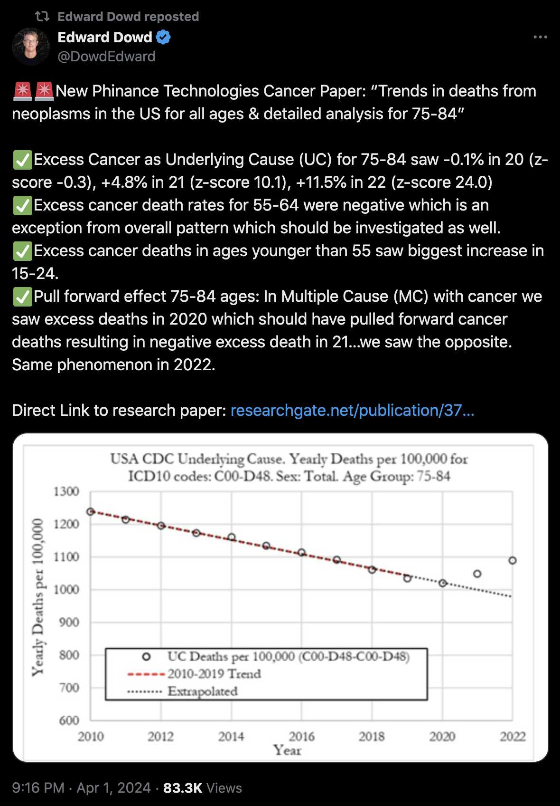
When I tried replicating the plot by using the population sizes returned by CDC WONDER, my mortality rate for 2022 was about 1009 and not about 1090 like in Dowd's paper, like you can see from the green crosses here:
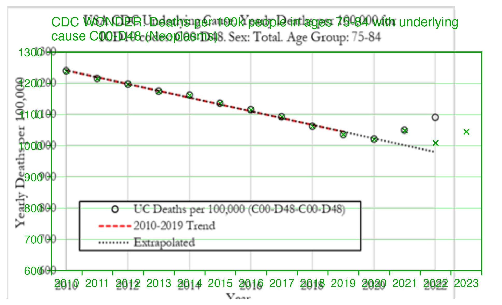
But then I realized the difference was because Alegria and Nunes wrote that they downloaded the data from CDC WONDER in December 2022, so at the time CDC WONDER still used the 2021 population estimates for 2022, in the same way that in March 2024 when I took the screenshot below, CDC WONDER still used the 2022 population estimates for 2023 and 2024:
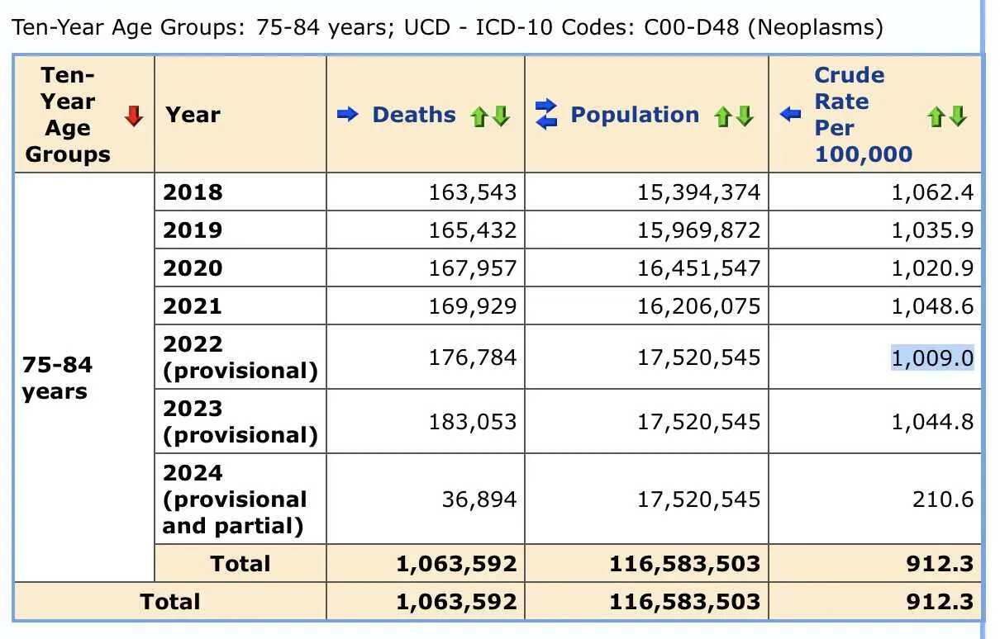
In the screenshot above if you calculate the mortality rate for 2022 by dividing the 2022 deaths by the 2021 population size, it's 176784/16206075*1e5 which is about 1091, so it matches the plot in Dowd's preprint.
However next I realized why Dowd's team got higher CMR in 2021 than 2020, which is that CDC WONDER uses population estimates based on the 2010 census for 2020 but population estimates based on the 2020 census from 2021 onwards. And if you look at the mid-2020 resident population estimate for ages 75 to 84, it was about 4% lower in the 2020-based vintage 2023 release than in the 2010-based vintage 2020 release:
# vintage 2020 release based on 2010 census (used for CDC WONDER's population sizes in 2020)
old=fread("https://www2.census.gov/programs-surveys/popest/datasets/2010-2020/national/asrh/nc-est2020-agesex-res.csv")
old[AGE%in%75:84&SEX==0,sum(POPESTIMATE2020)]
[1] 16451547
# vintage 2023 release based on 2020 census
new=fread("https://www2.census.gov/programs-surveys/popest/datasets/2020-2023/national/asrh/nc-est2023-agesex-res.csv")
> new[AGE%in%75:84&SEX==0,sum(POPESTIMATE2020)]
[1] 15822264 # about 4% lower than vintage 2020 estimate
This shows how CDC WONDER switched to the 2020-based population estimates in 2021, so CDC WONDER has a drop in the population size of ages 75-84 between 2020 and 2021:
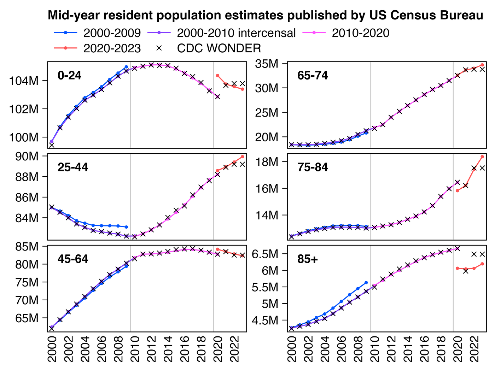
library(data.table);library(ggplot2)
agecut=\(x,y)cut(x,c(y,Inf),paste0(y,c(paste0("-",y[-1]-1),"+")),T,F)
kim=\(x)ifelse(x>=1e3,ifelse(x>=1e6,paste0(x/1e6,"M"),paste0(x/1e3,"k")),x)
new=fread("https://www2.census.gov/programs-surveys/popest/datasets/2020-2023/national/asrh/nc-est2023-agesex-res.csv")
old=fread("https://www2.census.gov/programs-surveys/popest/datasets/2010-2020/national/asrh/nc-est2020-agesex-res.csv")
old=old[SEX==0&AGE!=999,.(age=AGE,pop=unlist(.SD[,-(1:4)]),year=rep(2010:2020,each=.N))]
new=new[SEX==0&AGE!=999,.(age=AGE,pop=unlist(.SD[,-(1:3)]),year=rep(2020:2023,each=.N))]
older=fread("https://www2.census.gov/programs-surveys/popest/tables/2000-2010/intercensal/national/us-est00int-01.csv")
older=older[6:26,c(1,3:12,14)][,.(age=as.numeric(sub("\\D*(\\d+).*","\\1",sub("Under 5",0,V1))),pop=as.numeric(gsub(",","",unlist(.SD[,-1]))),year=rep(2000:2010,each=.N))]
oldest=fread("https://www2.census.gov/programs-surveys/popest/tables/2000-2009/national/asrh/nc-est2009-01.csv")
oldest=oldest[6:26,c(1,2:11)][,.(age=as.numeric(sub("\\D*(\\d+).*","\\1",sub("Under 5",0,V1))),pop=as.numeric(gsub(",","",unlist(.SD[,-1]))),year=rep(2009:2000,each=.N))]
won=fread("http://sars2.net/f/wondercanceryearlysingle.csv")[age<85,.(year,pop,age)]
won=rbind(won,fread("http://sars2.net/f/wondercanceryearlyten.csv")[cause==cause[1]&age==85,.(year,pop,age)])
p=cbind(oldest,z="2000-2009")
p=rbind(p,cbind(older,z="2000-2010 intercensal"))
p=rbind(p,cbind(old,z="2010-2020"))
p=rbind(p,cbind(new,z="2020-2023"))
p=rbind(p,cbind(won,z="CDC WONDER"))
p[,z:=factor(z,unique(z))]
ages=0:4*20
ages=c(0,25,45,65,75,85)
p=p[,.(pop=sum(pop)),.(z,year,age=agecut(age,ages))]
xstart=2000;xend=2023
p=p[year%in%xstart:xend]
ggplot(p,aes(x=year,y=pop))+
coord_cartesian(clip="off")+
facet_wrap(~age,ncol=2,dir="v",scales="free_y")+
geom_vline(xintercept=c(2009.5,2019.5),color="gray80",linewidth=.23)+
geom_line(aes(color=z,alpha=z),linewidth=.3)+
geom_point(aes(color=z,shape=z,size=z),stroke=.2)+
geom_text(fontface=2,data=p[,max(pop),age],aes(label=paste0("\n ",age," \n"),y=V1),x=xstart-.5,lineheight=.4,hjust=0,vjust=1,size=grid::convertUnit(unit(7,"pt"),"mm"))+
labs(title="Mid-year resident population estimates published by US Census Bureau",x=NULL,y=NULL)+
scale_x_continuous(limits=c(xstart-.5,xend+.5),breaks=seq(xstart-.5,xend+.5,.5),labels=c(rbind("",ifelse(xstart:xend%%2==0,xstart:xend,"")),""),expand=expansion(0))+
scale_y_continuous(labels=kim,breaks=\(x)Filter(\(y)y>min(x)+(max(x)-min(x))*.05,pretty(x,4)),expand=expansion(.04))+
scale_color_manual(values=c("#0055ff","#8844ff","#ff55ff","#ff5555","black"))+
scale_shape_manual(values=c(16,16,16,16,4))+
scale_alpha_manual(values=c(1,1,1,1,0))+
scale_size_manual(values=c(.7,.7,.7,.7,1))+
guides(color=guide_legend(nrow=2,byrow=T))+
theme(axis.text=element_text(size=7,color="black"),
axis.text.x=element_text(angle=90,vjust=.5,hjust=1),
axis.ticks=element_line(linewidth=.2,color="black"),
axis.ticks.length=unit(3,"pt"),
axis.ticks.length.x=unit(0,"pt"),
legend.background=element_blank(),
legend.box.spacing=unit(0,"pt"),
legend.justification="left",
legend.key=element_blank(),
legend.key.height=unit(8,"pt"),
legend.key.width=unit(17,"pt"),
legend.margin=margin(-2,,4),
legend.position="top",
legend.spacing.x=unit(2,"pt"),
legend.spacing.y=unit(1,"pt"),
legend.text=element_text(size=7,vjust=.5),
legend.title=element_blank(),
panel.background=element_blank(),
panel.border=element_rect(fill=NA,linewidth=.23),
panel.spacing.x=unit(3,"pt"),
panel.spacing.y=unit(3,"pt"),
plot.margin=margin(5,5,5,5),
plot.subtitle=element_text(size=7,margin=margin(,,3)),
plot.title=element_text(size=7.4,face=2,margin=margin(1,,4)),
strip.background=element_blank(),
strip.text=element_blank())
ggsave("1.png",width=4,height=3,dpi=350*4)
system("magick 1.png -resize 25% 1.png")
In the plot above my magenta line in 2010-2020 is not perfectly equal to the population estimates used by CDC WONDER, but it's because I used vintage 2020 population estimates for 2010-2020, but CDC WONDER uses vintage 2015 estimates for 2015, vintage 2016 estimates for 2016, and so on.
In the plot above the 2000-2010 intercensal population estimates are based on both 2000 and 2010 censuses, and they were adjusted to get rid of the jump between the 2000-based and 2010-based population estimates. CDC WONDER uses the 2000-2010 intercensal population estimates for the years 2000 to 2009, but the 2010-2020 intercensal population estimates are only scheduled to be published in 2025 after which they will probably replace the old 2010-based population estimates at CDC WONDER, so for now CDC WONDER suffers from the jump in population estimates between 2020 and 2021.
However while we are waiting for the new intercensal population estimates to be published, I developed a fairly straightforward way to adjust the 2010-2020 estimates to get rid of the jump. For example in ages 75 to 84, the ratio between the 2020-based vintage 2023 estimate for 2020 and the 2010-based vintage 2020 estimate for 2020 is 15822264/16451547 which is about 0.9617. So therefore I'm multiplying the population estimate for 2011 by about .9+.1*.9617, the population estimate for 2012 by about .8+.2*.9617, and so on (or actually in the plot below I'm doing the multiplication separately for each single year of age and then adding together the results for each age, but it's nearly equivalent to doing the multiplication for ages 75-84 aggregated together):
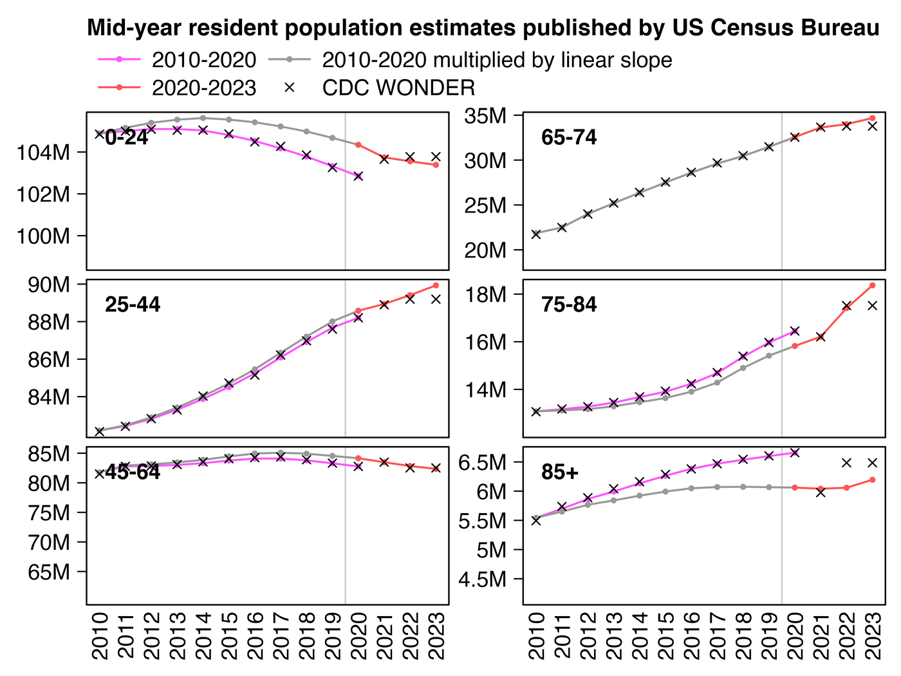
library(data.table);library(ggplot2)
agecut=\(x,y)cut(x,c(y,Inf),paste0(y,c(paste0("-",y[-1]-1),"+")),T,F)
kim=\(x)ifelse(x>=1e3,ifelse(x>=1e6,paste0(x/1e6,"M"),paste0(x/1e3,"k")),x)
new=fread("https://www2.census.gov/programs-surveys/popest/datasets/2020-2023/national/asrh/nc-est2023-agesex-res.csv")
old=fread("https://www2.census.gov/programs-surveys/popest/datasets/2010-2020/national/asrh/nc-est2020-agesex-res.csv")
old=old[SEX==0&AGE!=999,.(age=AGE,pop=unlist(.SD[,-(1:4)]),year=rep(2010:2020,each=.N))]
new=new[SEX==0&AGE!=999,.(age=AGE,pop=unlist(.SD[,-(1:3)]),year=rep(2020:2023,each=.N))]
mult=merge(old[year==2020],new[year==2020,.(age,new=pop)])[,.(ratio=new/pop,age)]
mult=merge(old,mult)[,mult:=(year-2010)/10]
mult=mult[,.(age,year,pop=((1-mult)*1+mult*ratio)*pop)]
won=fread("http://sars2.net/f/wondercanceryearlysingle.csv")[age<85,.(year,pop,age)]
won=rbind(won,fread("http://sars2.net/f/wondercanceryearlyten.csv")[cause==cause[1]&age==85,.(year,pop,age)])
p=cbind(old,z="2010-2020")
p=rbind(p,cbind(mult,z="2010-2020 multiplied by linear slope"))
p=rbind(p,cbind(new,z="2020-2023"))
p=rbind(p,cbind(won,z="CDC WONDER"))
p[,z:=factor(z,unique(z))]
ages=c(0,25,45,65,75,85)
p=p[,.(pop=sum(pop)),.(z,year,age=agecut(age,ages))]
xstart=2010;xend=2023;xbreak=seq(xstart-.5,xend+.5,.5);xlab=ifelse(xbreak%%1==0,xbreak,"")
ggplot(p,aes(x=year,y=pop))+
coord_cartesian(clip="off")+
facet_wrap(~age,ncol=2,dir="v",scales="free_y")+
geom_vline(xintercept=c(2009.5,2019.5),color="gray80",linewidth=.23)+
geom_line(aes(color=z,alpha=z),linewidth=.3)+
geom_point(aes(color=z,shape=z,size=z),stroke=.3)+
geom_text(fontface=2,data=p[,max(pop),age],aes(label=paste0("\n ",age," \n"),y=V1),x=xstart-.5,lineheight=.4,hjust=0,vjust=1,size=grid::convertUnit(unit(7,"pt"),"mm"))+
labs(title="Mid-year resident population estimates published by US Census Bureau",x=NULL,y=NULL)+
scale_x_continuous(limits=c(xstart-.5,xend+.5),breaks=xbreak,labels=xlab,expand=c(0,0))+
scale_y_continuous(labels=kim,breaks=\(x)Filter(\(y)y>min(x)+(max(x)-min(x))*.05,pretty(x,4)),expand=c(.04,0))+
scale_color_manual(values=c("#ff55ff","gray60","#ff5555","black"))+
scale_shape_manual(values=c(16,16,16,4))+
scale_alpha_manual(values=c(1,1,1,0))+
scale_size_manual(values=c(.7,.7,.7,1))+
guides(color=guide_legend(nrow=2,byrow=T))+
theme(axis.text=element_text(size=7,color="black"),
axis.text.x=element_text(angle=90,vjust=.5,hjust=1),
axis.ticks=element_line(linewidth=.2,color="black"),
axis.ticks.length=unit(3,"pt"),
axis.ticks.length.x=unit(0,"pt"),
legend.background=element_blank(),
legend.box.spacing=unit(0,"pt"),
legend.justification="left",
legend.key=element_blank(),
legend.key.height=unit(8,"pt"),
legend.key.width=unit(17,"pt"),
legend.margin=margin(-2,,4),
legend.position="top",
legend.spacing.x=unit(2,"pt"),
legend.spacing.y=unit(1,"pt"),
legend.text=element_text(size=7,vjust=.5),
legend.title=element_blank(),
panel.background=element_blank(),
panel.border=element_rect(fill=NA,linewidth=.23),
panel.spacing.x=unit(3,"pt"),
panel.spacing.y=unit(3,"pt"),
plot.margin=margin(5,5,5,5),
plot.subtitle=element_text(size=7,margin=margin(,,3)),
plot.title=element_text(size=7.4,face=2,margin=margin(1,,4)),
strip.background=element_blank(),
strip.text=element_blank())
ggsave("1.png",width=4,height=3,dpi=350*4)
system("magick 1.png -resize 25% 1.png")
In the next plot my improved population estimates are the same as the gray line in my plot above in 2010-2019 combined with the red line in 2020-2023. The improved population estimates gave me lower cancer CMR in 2021 than 2020:
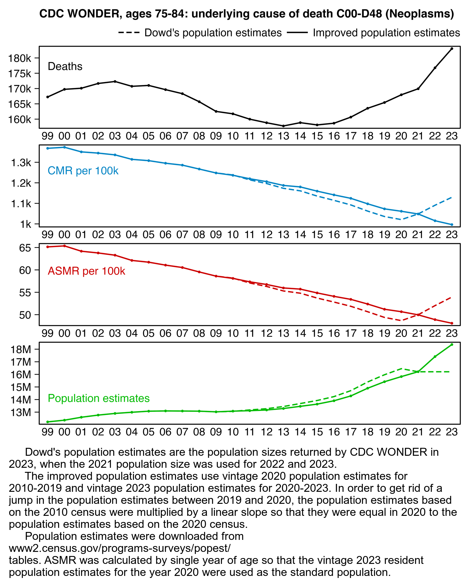
library(data.table);library(ggplot2);library(stringr)
kim=\(x)ifelse(x>=1e3,ifelse(x>=1e6,paste0(x/1e6,"M"),paste0(x/1e3,"k")),x)
t=fread("http://sars2.net/f/wondercanceryearlysingle.csv")
pop=fread("http://sars2.net/f/uspopdead.csv")
t$oldpop=t$pop;t[year>2021,oldpop:=t[year==2021,rep(pop,each=2)]]
t=merge(t,pop[,.(year,age,newpop=pop)],all=T)[!is.na(newpop),pop:=newpop]
t=merge(t[year==2020,.(age,std=pop/sum(pop))],t)
t=t[age%in%75:84&year!=2024]
a=t[,lapply(.SD,sum,na.rm=T),year,.SDcols=4:7]
years=unique(t$year)
p=a[,.(x=year,y=dead,old=NA,group="Deaths")]
p=rbind(p,a[,.(x=year,y=dead/pop*1e5,old=dead/oldpop*1e5,group="CMR per 100k")])
p=rbind(p,t[,.(y=sum(dead/pop*std)*1e5,old=sum(dead/oldpop*std)*1e5,group="ASMR per 100k"),.(x=year)])
p=rbind(p,a[,.(x=year,y=pop,old=oldpop,group="Population estimates")])
p=p[,.(x,y=c(y,old),group,z=rep(c("Improved population estimates","Dowd's population estimates"),each=.N))]
p[,group:=factor(group,unique(group))][,z:=factor(z,unique(z))]
xstart=1999;xend=2023
xbreak=seq(xstart-.5,xend+.5,.5);xlab=c(rbind("",substr(xstart:xend,3,4)),"")
color=c("black",hcl(225,110,45),"#cc0000","#00bb00")
sub="\u00a0 Dowd's population estimates are the population sizes returned by CDC WONDER in 2023, when the 2021 population size was used for 2022 and 2023.
The improved population estimates use vintage 2020 population estimates for 2010-2019 and vintage 2023 population estimates for 2020-2023. In order to get rid of a jump in the population estimates between 2019 and 2020, the population estimates based on the 2010 census were multiplied by a linear slope so that they were equal in 2020 to the population estimates based on the 2020 census.
Population estimates were downloaded from www2.census.gov/programs-surveys/popest/tables. ASMR was calculated by single year of age so that the vintage 2023 resident population estimates for the year 2020 were used as the standard population."
ggplot(p,aes(x,y,color=group))+
facet_wrap(~group,ncol=2,dir="v",scales="free")+
geom_line(aes(alpha=z),linewidth=.4)+
geom_point(aes(alpha=z),stroke=0,size=.8)+
geom_text(data=p[,max(y,na.rm=T),group],aes(label=group,y=V1),x=(xstart+xend)/2,hjust=.5,vjust=1.5,size=2.5,show.legend=F)+
labs(title="CDC WONDER, ages 75-84: underlying cause of death C00-D48 (Neoplasms)",x=NULL,y=NULL)+
scale_x_continuous(limits=c(xstart-.5,xend+.5),breaks=xbreak,labels=xlab,expand=expansion(0))+
scale_y_continuous(breaks=pretty,labels=kim,expand=c(.03,0))+
scale_color_manual(values=color)+
scale_alpha_manual(values=c(1,.3))+
coord_cartesian(clip="off")+
guides(color="none")+
theme(axis.text=element_text(size=7,color="black"),
axis.text.x=element_text(angle=90,vjust=.5,hjust=1),
axis.ticks=element_line(linewidth=.23,color="black"),
axis.ticks.length=unit(3,"pt"),
axis.ticks.length.x=unit(0,"pt"),
axis.title=element_text(size=8),
legend.background=element_blank(),
legend.box.spacing=unit(0,"pt"),
legend.justification=c(1,1),
legend.key=element_blank(),
legend.key.height=unit(10,"pt"),
legend.key.width=unit(17,"pt"),
legend.margin=margin(,,4),
legend.position="top",
legend.spacing.x=unit(1.5,"pt"),
legend.spacing.y=unit(0,"pt"),
legend.text=element_text(size=7),
legend.title=element_blank(),
panel.background=element_blank(),
panel.border=element_rect(linewidth=.3,fill=NA),
panel.spacing=unit(2,"pt"),
plot.margin=margin(5,5,5,5),
plot.title=element_text(size=7.4,face=2,margin=margin(1,,3)),
strip.background=element_blank(),
strip.text=element_blank())
ggsave("1.png",width=5,height=3.7,dpi=380*4)
system(paste0("magick 1.png -resize 25% 1.png;mar=30;w=`identify -format %w 1.png`;magick 1.png \\( -size $[w-mar*2]x -font Arial -interline-spacing -3 -pointsize 38 caption:'",gsub("'","'\\\\''",sub),"' -gravity southwest -splice $[mar]x14 \\) -append 1.png"))
Dowd's tweet said: "Excess Cancer as Underlying Cause (UC) for 75-84 saw -0.1% in 20 (z-score -0.3), +4.8% in 21 (z-score 10.1), +11.5% in 22 (z-score 24.0)". When I used the 2021 population estimate for 2022 and I used a 2010-2019 linear trend like Dowd, for some reason my z-score for 2022 was about 22.2 and not 24.0. But my z-score fell to only about 6.0 when I used the 2022 population estimate for 2022 instead:
d=data.frame(year=2010:2023) d$dead=c(161735,159986,158811,157768,158844,158105,158660,160652,163543,165432,167957,169929,176784,183053) # Population estimates returned by CDC WONDER: 2010-based estimates # are used for 2010-2020 and 2020-based estimates are used from 2021 # onwards. The 2022 population size is used for 2023. d$pop=c(13061122,13175230,13272634,13446519,13682690,13923174,14233534,14706551,15394374,15969872,16451547,16206075,17520545,17520545) d$cmr=d$dead/d$pop*1e5 fitting=d$year%in%2010:2019 # fitting period of baseline d$trend=predict(lm(cmr~year,d[fitting,]),d) # 2010-2019 linear regression d$excess=d$cmr-d$trend sd=sd(d$excess[fitting]) # standard deviation of excess deaths during fitting period d$sigma=d$excess/sd # z-score of excess deaths divided by standard deviation d$sigma[d$year==2022] # 6.024771 (sigma for 2022 deaths divided by 2022 population size) (d$dead[d$year==2022]/d$pop[d$year==2021]*1e5-d$trend[d$year==2022])/sd # 22.16794 (sigma for 2022 deaths divided by 2021 population size) print.data.frame(mutate_if(d,is.double,round,1),row.names=F) # year dead pop cmr trend excess sigma # 2010 161735 13061122 1238.3 1240.8 -2.5 -0.5 # 2011 159986 13175230 1214.3 1218.9 -4.6 -0.9 # 2012 158811 13272634 1196.5 1197.1 -0.5 -0.1 # 2013 157768 13446519 1173.3 1175.2 -1.9 -0.4 # 2014 158844 13682690 1160.9 1153.4 7.6 1.5 # 2015 158105 13923174 1135.6 1131.5 4.1 0.8 # 2016 158660 14233534 1114.7 1109.6 5.1 1.0 # 2017 160652 14706551 1092.4 1087.8 4.6 0.9 # 2018 163543 15394374 1062.4 1065.9 -3.6 -0.7 # 2019 165432 15969872 1035.9 1044.0 -8.1 -1.6 # 2020 167957 16451547 1020.9 1022.2 -1.3 -0.3 # 2021 169929 16206075 1048.6 1000.3 48.2 9.5 # 2022 176784 17520545 1009.0 978.5 30.5 6.0 # 2023 183053 17520545 1044.8 956.6 88.2 17.4
And when I additionally multiplied the 2010-2020 population estimates by a linear slope so they matched the vintage 2023 estimates in 2020, my z-score for excess deaths in 2022 fell to about -2.6:
# vintage 2020 estimates based on 2010 census
old=fread("https://www2.census.gov/programs-surveys/popest/datasets/2010-2020/national/asrh/nc-est2020-agesex-res.csv")
# vintage 2023 estimates based on 2020 census
new=fread("https://www2.census.gov/programs-surveys/popest/datasets/2020-2023/national/asrh/nc-est2023-agesex-res.csv")
old=old[SEX==0&AGE!=999,.(age=AGE,pop=unlist(.SD[,-(1:4)]),year=rep(2010:2020,each=.N))]
new=new[SEX==0&AGE!=999,.(age=AGE,pop=unlist(.SD[,-(1:3)]),year=rep(2020:2023,each=.N))]
# determine the ratio between new and old population estimates in 2020 for each age
o=merge(merge(old[year==2020,.(age,old=pop)],new[year==2020,.(age,new=pop)])[,.(age,ratio=new/old)],old)
# multiply old population estimates for each age by a linear slope so they match new estimates in 2020
o=rbind(o[year!=2020,.(year,age,pop=round(pop*(1-(((year-2010)/10))*(1-ratio))))],new)
# add together population estimates for ages 75-84 and add a column for cancer deaths from CDC WONDER
d=o[age%in%75:84,.(pop=sum(pop)),year]
d$dead=c(161735,159986,158811,157768,158844,158105,158660,160652,163543,165432,167957,169929,176784,183053)
d$cmr=d$dead/d$pop*1e5
fitting=d$year%in%2010:2019 # fitting period of baseline
d$trend=predict(lm(cmr~year,d[fitting,]),d) # linear regression
d$excess=d$cmr-d$trend
sd=sd(d$excess[fitting]) # standard deviation of excess deaths during fitting period
d$sigma=d$excess/sd # z-score of excess deaths divided by standard deviation
print(round(d,1),r=F)
# year pop dead cmr trend excess sigma
# 2010 13078302 161735 1236.7 1241.5 -4.8 -0.8
# 2011 13115506 159986 1219.8 1223.9 -4.1 -0.7
# 2012 13170459 158811 1205.8 1206.4 -0.6 -0.1
# 2013 13287408 157768 1187.3 1188.9 -1.5 -0.3
# 2014 13460363 158844 1180.1 1171.4 8.7 1.4
# 2015 13635446 158105 1159.5 1153.8 5.7 0.9
# 2016 13902566 158660 1141.2 1136.3 4.9 0.8
# 2017 14286363 160652 1124.5 1118.8 5.7 0.9
# 2018 14898231 163543 1097.7 1101.3 -3.5 -0.6
# 2019 15415405 165432 1073.2 1083.7 -10.6 -1.7
# 2020 15822264 167957 1061.5 1066.2 -4.7 -0.8
# 2021 16210654 169929 1048.3 1048.7 -0.4 -0.1
# 2022 17411486 176784 1015.3 1031.2 -15.8 -2.6
# 2023 18368097 183053 996.6 1013.6 -17.0 -2.8
There was an unusually low number of deaths in 1944 and 1945, but the earliest wave of baby boomers was born around mid-1946 so there was a huge increase in the number of births in 1946 and 1947: [https://www.calculatedriskblog.com/2010/04/us-births-per-year.html]
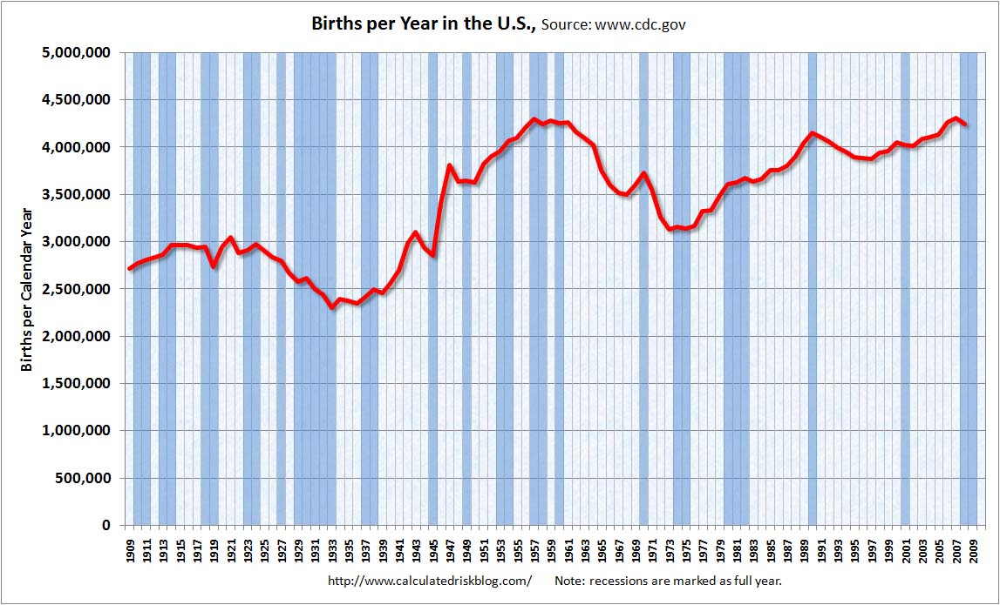
The next plot also shows how 2022 was the first year when the mid-year population estimates included a large number of people born after mid-1946 (I used the population sizes returned by CDC WONDER, where the population size of ages 75-84 fell between 2020 and 2021 due to the switch to the 2020-based population estimates, even though it's not too easy to see from this plot):
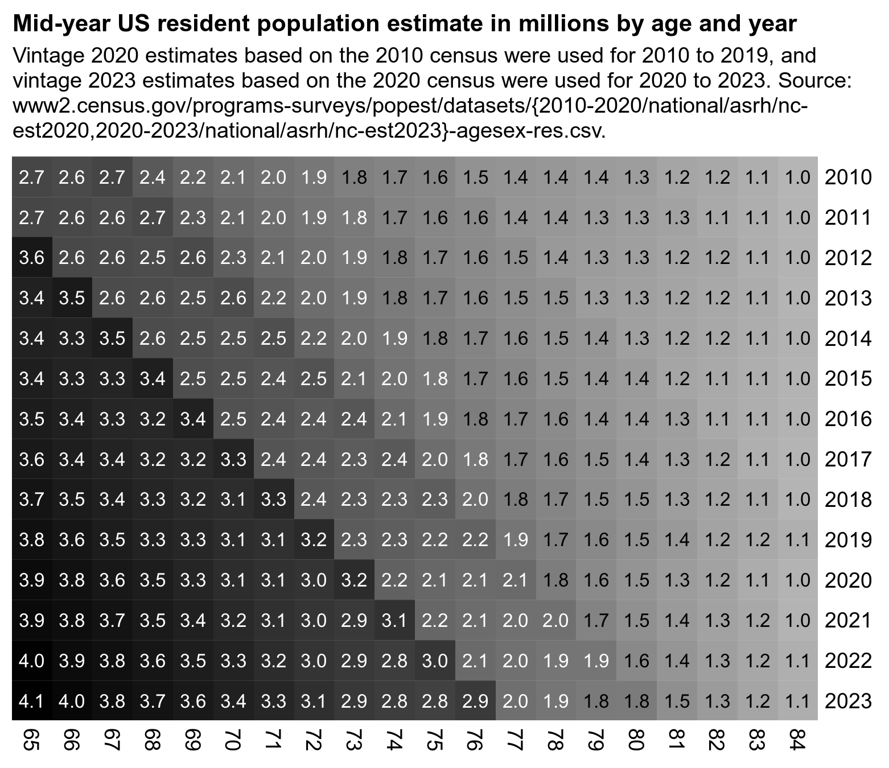
An annoying feature at CDC WONDER is that it doesn't return population sizes for monthly or weekly data but only yearly data. However the US Census Bureau has actually released monthly population estimates by single year of age, even though they seem to be interpolated from quarterly population estimates. [https://www2.census.gov/programs-surveys/popest/datasets/2020-2023/national/asrh/, https://www2.census.gov/programs-surveys/popest/datasets/2010-2020/national/asrh/] In the next plot in order to get rid of a jump in population estimates after the switch from the 2010-based to 2020-based population estimates, I used the same method as earlier to multiply the 2010-based population estimates with a linear slope so that they matched the 2020-based estimates in 2020. [ethical.html#Files_for_US_population_estimates_by_single_year_of_age_up_to_ages_100]
In the plot below I calculated the blue line so that I first did a linear regression for the CMR of each age, and then I multiplied the population size of the age by the projected trend in CMR to get the expected deaths for the age, and then I added together the expected deaths for all ages. The plot shows that there was a sharp turning point in the expected number of deaths around mid-2021, which was when the people born in mid-1946 started to turn 75:
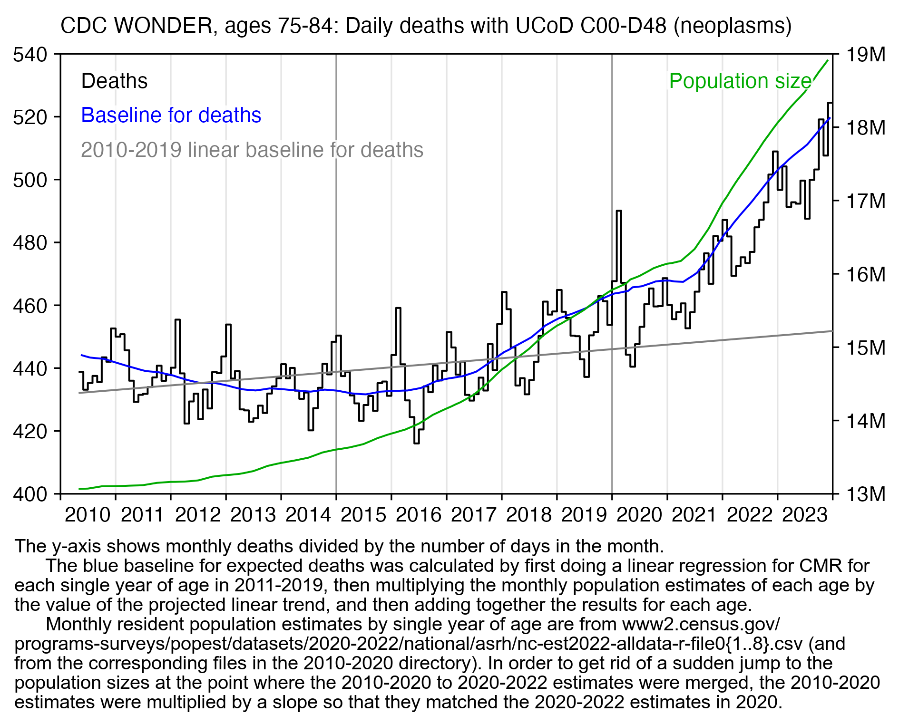
In March 2023 Carlos Alegria and Yuri Nunes from Ed Dowd's group Phinance Technologies published a preprint about cancer deaths in ages 15 to 44 at CDC WONDER. [https://www.researchgate.net/publication/378869803_US_%2dDeath_Trends_for_Neoplasms_ICD_codes_C00-D48_Ages_15-44] These plots from the paper appeared to show that there was a large increase in mortality between 2020 and 2021:
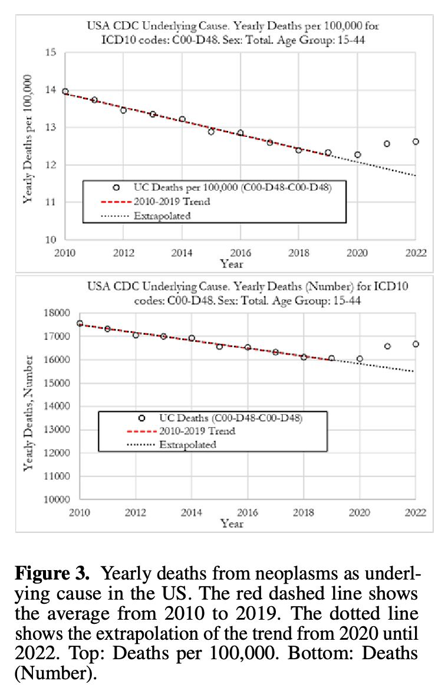
However the x-axis in the plots above started in 2010, so you couldn't see that the increase in mortality between 2020 and 2021 wasn't that big compared to the decrease in mortality since 1999. And you also couldn't see that the long-term trend in CMR between 1999 and 2019 looked curved so that it got flatter over time, so therefore the 2010-2019 linear trend used by Dowd's group might have been too steep relative to a longer-term curved trend:
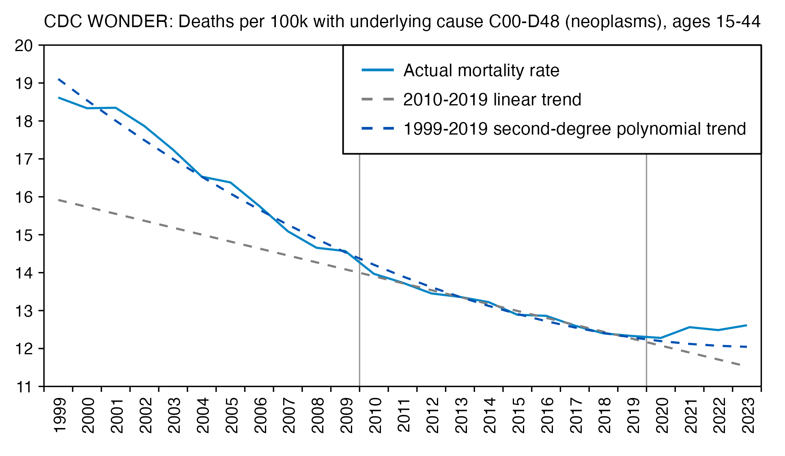
library(data.table);library(ggplot2);library(stringr)
t=fread("http://sars2.net/f/wondercanceryearlysingle.csv")
pop=fread("http://sars2.net/f/uspopdead.csv")
t=merge(t,pop[,.(year,age,pop2=pop)],all=T)
t[!is.na(pop2),pop:=pop2]
p=t[age%in%15:44&year!=2024,.(y=sum(dead)/sum(pop)*1e5,z="Mortality rate"),.(x=year)]
years=1999:2023
p2=p[x%in%2010:2019,.(x=years,y=predict(lm(y~x),p),z="2010-2019 linear trend")]
p3=p[x%in%1999:2019,.(x=years,y=predict(lm(y~poly(x,2)),p),z="1999-2019 quadratic trend")]
p=rbind(p,p2,p3)[,z:=factor(z,unique(z))]
ybreak=pretty(p$y,9);ystart=ybreak[1];yend=max(ybreak)
xstart=years[1];xend=max(years)
xbreak=seq(xstart-.5,xend+.5,.5);xlab=c(rbind("",xstart:xend),"")
color=c("black",hsv(22/36,1,.8),hsv(12/36,1,.65))
ggplot(p,aes(x,y,color=z))+
geom_hline(yintercept=c(ystart,yend),linewidth=.25,lineend="square")+
geom_vline(xintercept=c(xstart-.5,xend+.5),linewidth=.25,lineend="square")+
geom_vline(xintercept=c(2009.5,2019.5),linetype=5,linewidth=.25)+
geom_line(linewidth=.35)+
geom_point(aes(alpha=z),size=.5)+
geom_line(data=p[z==z[1]],linewidth=.35)+
labs(title="CDC WONDER, ages 15-44: crude mortality rate per 100,000 people for\nunderlying cause of death C00-D48 (neoplasms)",x=NULL,y=NULL)+
scale_x_continuous(limits=c(xstart-.5,xend+.5),breaks=xbreak,labels=xlab)+
scale_y_continuous(limits=c(ystart,yend),breaks=ybreak)+
scale_color_manual(values=color)+
scale_alpha_manual(values=c(1,0,0))+
coord_cartesian(clip="off",expand=F)+
theme(axis.text=element_text(size=7,color="black"),
axis.text.x=element_text(angle=90,vjust=.5,hjust=1,margin=margin(3)),
axis.ticks=element_line(linewidth=.25,color="black"),
axis.ticks.length=unit(3,"pt"),
axis.ticks.length.x=unit(0,"pt"),
legend.background=element_blank(),
legend.box.background=element_rect(linewidth=.3),
legend.box.just="left",
legend.justification=c(1,1),
legend.key=element_blank(),
legend.key.height=unit(9,"pt"),
legend.key.width=unit(17,"pt"),
legend.margin=margin(-2,4,4,4),
legend.position=c(1,1),
legend.spacing.x=unit(1,"pt"),
legend.text=element_text(size=7,vjust=.5),
legend.title=element_blank(),
panel.background=element_blank(),
plot.margin=margin(5,5,5,5),
plot.subtitle=element_text(size=7,margin=margin(,,4)),
plot.title=element_text(size=7,face=2,margin=margin(1,,4)))
ggsave("1.png",width=3.6,height=2.5,dpi=380*4)
system("magick 1.png -resize 25% 1.png")
The authors again downloaded the data from CDC WONDER back when it still used 2021 population estimates for 2022, and they didn't adjust the population estimates to get rid of the jump between 2020 and 2021. In ages 75 to 84 the population estimates based on the 2020 census were lower than the population estimates based on the 2010 census. However in ages 15 to 44 time it was the other way around, so there was a jump up in population sizes between 2020 and 2021 which actually caused Dowd's group to underestimate excess CMR in 2021 relative to the prepandemic baseline. However the difference was not very large, and in this case using 2021 population estimates for 2022 didn't make much difference either:
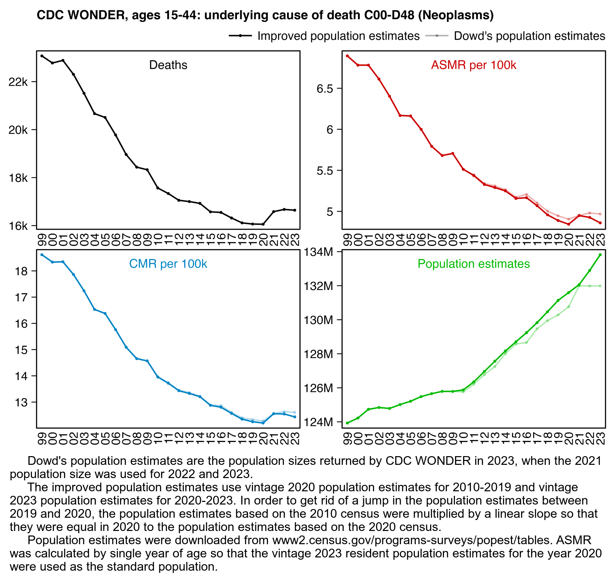
library(data.table);library(ggplot2);library(stringr)
kim=\(x)ifelse(x>=1e3,ifelse(x>=1e6,paste0(x/1e6,"M"),paste0(x/1e3,"k")),x)
t=fread("http://sars2.net/f/wondercanceryearlysingle.csv")
pop=fread("http://sars2.net/f/uspopdead.csv")
t$oldpop=t$pop;t[year>2021,oldpop:=t[year==2021,rep(pop,each=2)]]
t=merge(t,pop[,.(year,age,newpop=pop)],all=T)[!is.na(newpop),pop:=newpop]
t=merge(t[year==2020,.(age,std=pop/sum(pop))],t)
t=t[age%in%15:44&year!=2024]
a=t[,lapply(.SD,sum,na.rm=T),year,.SDcols=4:7]
years=unique(t$year)
p=a[,.(x=year,y=dead,old=NA,group="Deaths")]
p=rbind(p,a[,.(x=year,y=dead/pop*1e5,old=dead/oldpop*1e5,group="CMR per 100k")])
p=rbind(p,t[,.(y=sum(dead/pop*std)*1e5,old=sum(dead/oldpop*std)*1e5,group="ASMR per 100k"),.(x=year)])
p=rbind(p,a[,.(x=year,y=pop,old=oldpop,group="Population estimates")])
p=p[,.(x,y=c(y,old),group,z=rep(c("Improved population estimates","Dowd's population estimates"),each=.N))]
p[,group:=factor(group,unique(group))][,z:=factor(z,unique(z))]
xstart=1999;xend=2023
xbreak=seq(xstart-.5,xend+.5,.5);xlab=c(rbind("",substr(xstart:xend,3,4)),"")
color=c("black",hcl(225,110,45),"#cc0000","#00bb00")
sub="\u00a0 Dowd's population estimates are the population sizes returned by CDC WONDER in 2023, when the 2021 population size was used for 2022 and 2023.
The improved population estimates use vintage 2020 population estimates for 2010-2019 and vintage 2023 population estimates for 2020-2023. In order to get rid of a jump in the population estimates between 2019 and 2020, the population estimates based on the 2010 census were multiplied by a linear slope so that they were equal in 2020 to the population estimates based on the 2020 census.
Population estimates were downloaded from www2.census.gov/programs-surveys/popest/tables. ASMR was calculated by single year of age so that the vintage 2023 resident population estimates for the year 2020 were used as the standard population."
ggplot(p,aes(x,y,color=group))+
facet_wrap(~group,ncol=2,dir="v",scales="free")+
geom_line(aes(alpha=z),linewidth=.4)+
geom_point(aes(alpha=z),stroke=0,size=.8)+
geom_text(data=p[,max(y,na.rm=T),group],aes(label=group,y=V1),x=(xstart+xend)/2,hjust=.5,vjust=1.5,size=2.5,show.legend=F)+
labs(title="CDC WONDER, ages 15-44: underlying cause of death C00-D48 (Neoplasms)",x=NULL,y=NULL)+
scale_x_continuous(limits=c(xstart-.5,xend+.5),breaks=xbreak,labels=xlab,expand=expansion(0))+
scale_y_continuous(breaks=pretty,labels=kim,expand=c(.03,0))+
scale_color_manual(values=color)+
scale_alpha_manual(values=c(1,.3))+
coord_cartesian(clip="off")+
guides(color="none")+
theme(axis.text=element_text(size=7,color="black"),
axis.text.x=element_text(angle=90,vjust=.5,hjust=1),
axis.ticks=element_line(linewidth=.23,color="black"),
axis.ticks.length=unit(3,"pt"),
axis.ticks.length.x=unit(0,"pt"),
axis.title=element_text(size=8),
legend.background=element_blank(),
legend.box.spacing=unit(0,"pt"),
legend.justification=c(1,1),
legend.key=element_blank(),
legend.key.height=unit(10,"pt"),
legend.key.width=unit(17,"pt"),
legend.margin=margin(,,4),
legend.position="top",
legend.spacing.x=unit(1.5,"pt"),
legend.spacing.y=unit(0,"pt"),
legend.text=element_text(size=7),
legend.title=element_blank(),
panel.background=element_blank(),
panel.border=element_rect(linewidth=.3,fill=NA),
panel.spacing=unit(2,"pt"),
plot.margin=margin(5,5,5,5),
plot.title=element_text(size=7.4,face=2,margin=margin(1,,3)),
strip.background=element_blank(),
strip.text=element_blank())
ggsave("1.png",width=5,height=3.7,dpi=380*4)
system(paste0("magick 1.png -resize 25% 1.png;mar=30;w=`identify -format %w 1.png`;magick 1.png \\( -size $[w-mar*2]x -font Arial -interline-spacing -3 -pointsize 38 caption:'",gsub("'","'\\\\''",sub),"' -gravity southwest -splice $[mar]x14 \\) -append 1.png"))
The US Census Bureau published resident population estimates for mid-2022 in December 2022, but CDC WONDER kept using the 2021 resident population estimates for the year 2022 until approximately January 2024. Dowd's team retrieved the data from CDC WONDER in late 2023 when it still used 2021 population estimates for 2022, which slightly elevated their CMR in 2022 by about 1.2%:
> t=fread("http://sars2.net/f/wondercanceryearlysingle.csv")[age%in%15:44]
> a=t[,.(dead=sum(dead),pop=sum(pop)),year]
> tail(a)
year dead pop
1: 2018 16112 129946462
2: 2019 16065 130286975
3: 2020 16056 130761522
4: 2021 16581 131987622
5: 2022 16673 133538236
6: 2023 16641 133538236
> a[year==2022,dead]/a[year==2021,pop]*1e5 # 2022 deaths divided by 2021 population like in Dowd's paper
[1] 12.63225
> a[year==2022,dead/pop*1e5] # 2022 CMR using 2022 population
[1] 12.48556
In the next plot I first calculated a linear trend in CMR within each 5-year age group in 2010-2019, and then I multiplied the projected trend by the population size of each age group in order to get the expected deaths for each age group, and I added together the expected deaths for all ages to get the total expected deaths for each month. So my method allows plotting raw deaths on the y-axis while simultaneously calculating the baseline so that it accounts for changes to the size of different age groups. In my plot there's an inflection point in the slope of the baseline around the year 2017 after which the baseline becomes more flat. So when Dowd's team plotted raw deaths using a 2010-2019 linear baseline, it ended up exaggerating excess deaths during COVID because the baseline was too steep because it didn't take the inflection into account. My plot also shows that in September 2021 and January 2022 when there's big spikes in COVID deaths, there's also more UCD cancer deaths than in the surrounding months, so a part of the increase in UCD cancer deaths might be due to COVID:
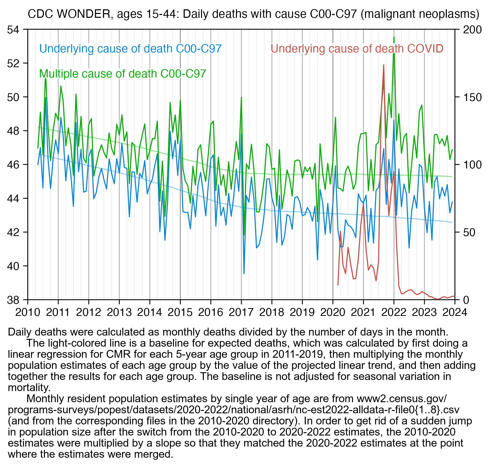
The plot above shows that ages 15 to 44 had a high number of COVID deaths in 2021 relative to 2020, which might partially explain why young age groups have high cancer deaths in 2021 relative to 2020. In the United States the total number of COVID deaths in 2021 as a percentage of the COVID deaths in 2020 was much higher in younger age groups than older age groups, which might be because younger age groups were less likely to be vaccinated in 2021. This shows the yearly number of deaths with UCD COVID from CDC WONDER:
| Age | 2020 | 2021 | 2021 as percentage of 2020 |
|---|---|---|---|
| 0 | 35 | 91 | 260% |
| 1-4 | 19 | 54 | 284% |
| 5-14 | 49 | 143 | 292% |
| 15-24 | 505 | 1405 | 278% |
| 25-34 | 2260 | 6134 | 271% |
| 35-44 | 6084 | 16011 | 263% |
| 45-54 | 16970 | 36884 | 217% |
| 55-64 | 42096 | 73731 | 175% |
| 65-74 | 76285 | 102721 | 135% |
| 75-84 | 97032 | 98808 | 102% |
| 85+ | 109529 | 80934 | 74% |
(To be added. See this thread by Uncle John Returns in the meanwhile: https://x.com/UncleJo46902375/status/1783797036749402598.)